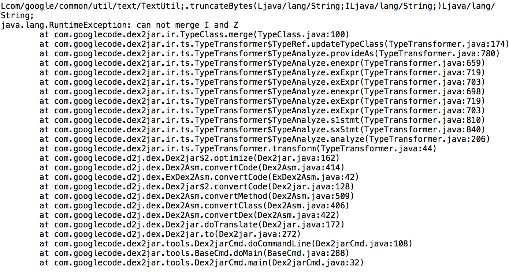

###一、看美团
最近在看美团外卖的代码，发现美团外卖4.1.1版本之后的安装包无法正常的通过dex2jar工具将dex转换出Java源代码，在转换过程中会提示出错，如图：

查看转换出的Java源代码，会发现很多类方法提示下图所示异常：
1 | public class AsyncTaskService extends IntentService { public void onCreate(){ super.onCreate(); } public void onDestroy(){ throw new RuntimeException("d2j fail translate: java.lang.RuntimeException: can not merge I and Z\n\tat com.googlecode.dex2jar.ir.TypeClass.merge(TypeClass.java:100)\n\tat com.googlecode.dex2jar.ir.ts.TypeTransformer$TypeRef.updateTypeClass(TypeTransformer.java:174)\n\tat com.googlecode.dex2jar.ir.ts.TypeTransformer$TypeAnalyze.provideAs(TypeTransformer.java:783)\n\tat com.googlecode.dex2jar.ir.ts.TypeTransformer$TypeAnalyze.enexpr(TypeTransformer.java:662)\n\tat com.googlecode.dex2jar.ir.ts.TypeTransformer$TypeAnalyze.exExpr(TypeTransformer.java:722)\n\tat com.googlecode.dex2jar.ir.ts.TypeTransformer$TypeAnalyze.exExpr(TypeTransformer.java:706)\n\tat com.googlecode.dex2jar.ir.ts.TypeTransformer$TypeAnalyze.enexpr(TypeTransformer.java:701)\n\tat com.googlecode.dex2jar.ir.ts.TypeTransformer$TypeAnalyze.exExpr(TypeTransformer.java:722)\n\tat com.googlecode.dex2jar.ir.ts.TypeTransformer$TypeAnalyze.exExpr(TypeTransformer.java:706)\n\tat com.googlecode.dex2jar.ir.ts.TypeTransformer$TypeAnalyze.s1stmt(TypeTransformer.java:813)\n\tat com.googlecode.dex2jar.ir.ts.TypeTransformer$TypeAnalyze.sxStmt(TypeTransformer.java:843)\n\tat com.googlecode.dex2jar.ir.ts.TypeTransformer$TypeAnalyze.analyze(TypeTransformer.java:206)\n\tat com.googlecode.dex2jar.ir.ts.TypeTransformer.transform(TypeTransformer.java:44)\n\tat com.googlecode.d2j.dex.Dex2jar$2.optimize(Dex2jar.java:161)\n\tat com.googlecode.d2j.dex.Dex2Asm.convertCode(Dex2Asm.java:433)\n\tat com.googlecode.d2j.dex.ExDex2Asm.convertCode(ExDex2Asm.java:42)\n\tat com.googlecode.d2j.dex.Dex2jar$2.convertCode(Dex2jar.java:129)\n\tat com.googlecode.d2j.dex.Dex2Asm.convertMethod(Dex2Asm.java:528)\n\tat com.googlecode.d2j.dex.Dex2Asm.convertClass(Dex2Asm.java:425)\n\tat com.googlecode.d2j.dex.Dex2Asm.convertDex(Dex2Asm.java:441)\n\tat com.googlecode.d2j.dex.Dex2jar.doTranslate(Dex2jar.java:171)\n\tat com.googlecode.d2j.dex.Dex2jar.to(Dex2jar.java:271)\n\tat com.googlecode.dex2jar.tools.Dex2jarCmd.doCommandLine(Dex2jarCmd.java:109)\n\tat com.googlecode.dex2jar.tools.BaseCmd.doMain(BaseCmd.java:290)\n\tat com.googlecode.dex2jar.tools.Dex2jarCmd.main(Dex2jarCmd.java:33)\n"); } protected void onHandleIntent(Intent paramIntent){ throw new RuntimeException("d2j fail translate: java.lang.RuntimeException: can not merge I and Z\n\tat com.googlecode.dex2jar.ir.TypeClass.merge(TypeClass.java:100)\n\tat com.googlecode.dex2jar.ir.ts.TypeTransformer$TypeRef.updateTypeClass(TypeTransformer.java:174)\n\tat com.googlecode.dex2jar.ir.ts.TypeTransformer$TypeAnalyze.provideAs(TypeTransformer.java:783)\n\tat com.googlecode.dex2jar.ir.ts.TypeTransformer$TypeAnalyze.enexpr(TypeTransformer.java:662)\n\tat com.googlecode.dex2jar.ir.ts.TypeTransformer$TypeAnalyze.exExpr(TypeTransformer.java:722)\n\tat com.googlecode.dex2jar.ir.ts.TypeTransformer$TypeAnalyze.exExpr(TypeTransformer.java:706)\n\tat com.googlecode.dex2jar.ir.ts.TypeTransformer$TypeAnalyze.enexpr(TypeTransformer.java:701)\n\tat com.googlecode.dex2jar.ir.ts.TypeTransformer$TypeAnalyze.exExpr(TypeTransformer.java:722)\n\tat com.googlecode.dex2jar.ir.ts.TypeTransformer$TypeAnalyze.exExpr(TypeTransformer.java:706)\n\tat com.googlecode.dex2jar.ir.ts.TypeTransformer$TypeAnalyze.s1stmt(TypeTransformer.java:813)\n\tat com.googlecode.dex2jar.ir.ts.TypeTransformer$TypeAnalyze.sxStmt(TypeTransformer.java:843)\n\tat com.googlecode.dex2jar.ir.ts.TypeTransformer$TypeAnalyze.analyze(TypeTransformer.java:206)\n\tat com.googlecode.dex2jar.ir.ts.TypeTransformer.transform(TypeTransformer.java:44)\n\tat com.googlecode.d2j.dex.Dex2jar$2.optimize(Dex2jar.java:161)\n\tat com.googlecode.d2j.dex.Dex2Asm.convertCode(Dex2Asm.java:433)\n\tat com.googlecode.d2j.dex.ExDex2Asm.convertCode(ExDex2Asm.java:42)\n\tat com.googlecode.d2j.dex.Dex2jar$2.convertCode(Dex2jar.java:129)\n\tat com.googlecode.d2j.dex.Dex2Asm.convertMethod(Dex2Asm.java:528)\n\tat com.googlecode.d2j.dex.Dex2Asm.convertClass(Dex2Asm.java:425)\n\tat com.googlecode.d2j.dex.Dex2Asm.convertDex(Dex2Asm.java:441)\n\tat com.googlecode.d2j.dex.Dex2jar.doTranslate(Dex2jar.java:171)\n\tat com.googlecode.d2j.dex.Dex2jar.to(Dex2jar.java:271)\n\tat com.googlecode.dex2jar.tools.Dex2jarCmd.doCommandLine(Dex2jarCmd.java:109)\n\tat com.googlecode.dex2jar.tools.BaseCmd.doMain(BaseCmd.java:290)\n\tat com.googlecode.dex2jar.tools.Dex2jarCmd.main(Dex2jarCmd.java:33)\n"); } public int onStartCommand(Intent paramIntent, int paramInt1, int paramInt2){ throw new RuntimeException("d2j fail translate: java.lang.RuntimeException: can not merge I and Z\n\tat com.googlecode.dex2jar.ir.TypeClass.merge(TypeClass.java:100)\n\tat com.googlecode.dex2jar.ir.ts.TypeTransformer$TypeRef.updateTypeClass(TypeTransformer.java:174)\n\tat com.googlecode.dex2jar.ir.ts.TypeTransformer$TypeAnalyze.provideAs(TypeTransformer.java:783)\n\tat com.googlecode.dex2jar.ir.ts.TypeTransformer$TypeAnalyze.enexpr(TypeTransformer.java:662)\n\tat com.googlecode.dex2jar.ir.ts.TypeTransformer$TypeAnalyze.exExpr(TypeTransformer.java:722)\n\tat com.googlecode.dex2jar.ir.ts.TypeTransformer$TypeAnalyze.exExpr(TypeTransformer.java:706)\n\tat com.googlecode.dex2jar.ir.ts.TypeTransformer$TypeAnalyze.enexpr(TypeTransformer.java:701)\n\tat com.googlecode.dex2jar.ir.ts.TypeTransformer$TypeAnalyze.exExpr(TypeTransformer.java:722)\n\tat com.googlecode.dex2jar.ir.ts.TypeTransformer$TypeAnalyze.exExpr(TypeTransformer.java:706)\n\tat com.googlecode.dex2jar.ir.ts.TypeTransformer$TypeAnalyze.s1stmt(TypeTransformer.java:813)\n\tat com.googlecode.dex2jar.ir.ts.TypeTransformer$TypeAnalyze.sxStmt(TypeTransformer.java:843)\n\tat com.googlecode.dex2jar.ir.ts.TypeTransformer$TypeAnalyze.analyze(TypeTransformer.java:206)\n\tat com.googlecode.dex2jar.ir.ts.TypeTransformer.transform(TypeTransformer.java:44)\n\tat com.googlecode.d2j.dex.Dex2jar$2.optimize(Dex2jar.java:161)\n\tat com.googlecode.d2j.dex.Dex2Asm.convertCode(Dex2Asm.java:433)\n\tat com.googlecode.d2j.dex.ExDex2Asm.convertCode(ExDex2Asm.java:42)\n\tat com.googlecode.d2j.dex.Dex2jar$2.convertCode(Dex2jar.java:129)\n\tat com.googlecode.d2j.dex.Dex2Asm.convertMethod(Dex2Asm.java:528)\n\tat com.googlecode.d2j.dex.Dex2Asm.convertClass(Dex2Asm.java:425)\n\tat com.googlecode.d2j.dex.Dex2Asm.convertDex(Dex2Asm.java:441)\n\tat com.googlecode.d2j.dex.Dex2jar.doTranslate(Dex2jar.java:171)\n\tat com.googlecode.d2j.dex.Dex2jar.to(Dex2jar.java:271)\n\tat com.googlecode.dex2jar.tools.Dex2jarCmd.doCommandLine(Dex2jarCmd.java:109)\n\tat com.googlecode.dex2jar.tools.BaseCmd.doMain(BaseCmd.java:290)\n\tat com.googlecode.dex2jar.tools.Dex2jarCmd.main(Dex2jarCmd.java:33)\n"); } } |
查看日志文件会发现很多类似的错误信息：

###二、为什么？
java.lang.RuntimeException: can not merge I and Z这个异常，在https://sourceforge.net/p/dex2jar/tickets/238/这里解释的比较清楚，其实是一个dex2jar工具检查出的一个参数异常，”The problem is caused by strict type calculation, because in java syntaxt, a boolean can not assign to an inteager. so dex2jar forbid merge type Z and I.“ 一个参数为整型的函数，你用布尔类型入参调用，当然会检查出错，为啥这么说，看下面👇。
本来以为这是dex2jar工具低版本的一个bug，但更新了dex2jar以后，转换还是出错，所以就使用apktool工具，看了一下apk的smali代码。发现报错的函数的最前面都含有一段奇怪smali的代码：
1 | invoke-static {}, Lpnf/this/object/does/not/Exist;->a()Z move-result v0 invoke-static {v0}, Lpnf/this/object/does/not/Exist;->b(I)V |
看上面的代码，pnf.this.object.does.not.Exist.a()方法返回一个boolean类型数据，放入v0寄存器，作为pnf.this.object.does.not.Exist.b(int)函数的入参。照理说这样的语法错误在java代码编译时就不会通过的。难道是美团故意这样做的？我的迫害妄想症~~
看到这里你会不会想，如果我不想别人直接看到我的Java代码，是不是可以通过在核心函数中插入上面这段有语法错误的代码，以达到dex2jar工具检查出错的目的呢？从java代码到smali字节码，这样又提高了代码被别人阅读的门口。但是？有语法错误的代码运行时为啥不会出错？？？
###三、验证
为了验证上面的猜想，分三步。
- 1.反编译一个apk。
- 2.修改他的smali代码，插入上面这三句有语法错误的代码。
- 3.看运行时是否出错，用dex2jar工具转换新包的dex，看是否能正常转换出Java源代码。
我这里用一个三方应用来测试，没有用自己的应用所以没有源码，使用apktool反编译出smali代码，并在Application的onCreate方法中插入这段有语法错误的代码。
1 | # virtual methods .method public onCreate()V .locals 3 invoke-super {p0}, Lcn/trinea/android/lib/h/c;->onCreate()V invoke-virtual {p0}, Lcn/trinea/android/developertools/MyApplication;->getApplicationContext()Landroid/content/Context; move-result-object v0 invoke-static {}, Lpnf/object/does/not/Exist;->a()Z move-result v3 invoke-static {v3}, Lpnf/object/does/not/Exist;->b(I)V const-string v1, "1d0854dc96" const/4 v2, 0x0 invoke-static {v0, v1, v2}, Lcom/tencent/bugly/crashreport/CrashReport;->initCrashReport(Landroid/content/Context;Ljava/lang/String;Z)V return-void .end method |
并且不要忘了，你可能需要另外添加Exist.smali这个文件，不然运行时一定会爆出ClassNotFound异常。将下面的Exist.java编译出Exist.smali放入步骤一中的测试包重打包就可以了。
1 | public class Exist { public static boolean a() { return false; } public static void b(int test) { } } |
最后，验证下，果然重新打包后的apk，不能正常转换出Java源代码，这里就不贴图了(因为转换出错日志是一样的)。并且运行时也不会出错。接下来会写一个Gradle编译插件，针对特定的函数，插入代码，防止dex2jar工具查看Java源代码。
###四、参考文档